Boulder Valley Models Workboose, #513
A Work in Progress
Click any image for a larger view in a new browser tab.| 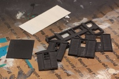 | 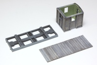 | 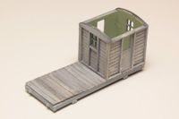 | 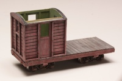 |
| The basic kit is primarily cast resin. I gave the parts a good cleaning and lightly primed them before laying down a "weathered wood" base with acrylic craft paints. I couldn't resist mocking up the parts from time to time, but the cabin is not yet joined to the deck. That will be one of the last steps. With the red added, I also had to mount up the BVM T-1 trucks. | |||
| Now the fun begins! | |||
|---|---|---|---|
 |
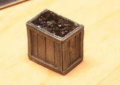 | 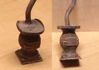 | |
|
The scratch built coal bin and stove. Note the inch ruler for size reference in the first shot. The coal bin is constructed of .020 styrene and filled with real coal. I made a pattern and mold for the stove, then cast it upside down in a silicone mold using urethane resin. Its upper plate is styrene and the stove pipe 3/32 aluminum tubing.
Note the NBWs for securing the stove to cabin floor. Yeah, I know there is no clean out door for the ashes, and I still need to model the removable handle for the lid. Sorry, there are no pictures from roughing in the bench seating and table. |
|||
| . | |||
| 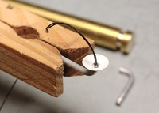 | 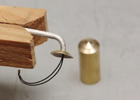 | 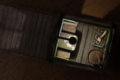 | |
|
All this interior detailing demands a light to show it off. Ultimately this car will also have its own DCC decoder for operating the light remotely. I pressed the lamp shade from .005 brass shim stock and mounted it on a piece of 1/16 aluminum tube.
The brass tools in the background were used to press the shade to shape before using a paper punch to cut it from raw stock, and to bend the aluminum tube. I slid the micro LED through the tubing before bending. The cabin interior measures approximately 1 1/4 x 1 1/2 inches. |
|||
| . | |||
| 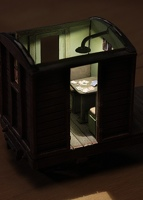 | 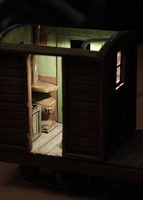 |  |
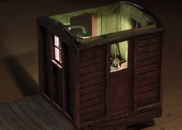 |
|
The micro LED is very effective, perfect for a few hands of penny-ante poker. The cards are a bit over scale, but I don't think so much as to be offensive. That is probably the #1 reason to not put a figure on one of the benches. The missing door will be rehung ajar to better reveal the interior detail.
The stove looks like it will more than do the job in this little space on a cold evening, even with the door open! The coal bin and stove consume about a third of the interior space. The heat shield behind stove and flue is painted aluminum foil. The floor will be weathered further before final assembly with coal dust in the corners, to more accurately reflect the lack of housekeeping. I really like the view of coal shovel through the closed door. I formed its blade from aluminum foil. The handle is a piece of .045 dowel, so just over 2 scale inches. |
|||
| . | |||
| 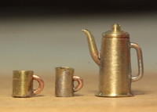 | 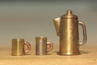 | 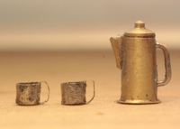 | 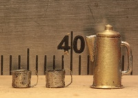 |
|
Next up was my first attempt at a coffee pot and some cups. I turned them from brass on my Sherline lathe, and used .019 copper wire for the handles. The spout is tapered .030 brass. Version 2 replaced the teapot style spout with a better shape, but it is still too big. A bit of research also showed that appropriate prototypical cups are shorter and wider, with tin strap handles. The set is shown against a mm rule to give a sense of scale. The cups measure approximately .070 x .080 inches, or 3 3/8 x 3 5/8 scale inches. The handles are .001 shim stock, cut .013 wide. This is roughly 1/16 x 5/8 scale inches. As these handles show, they have obviously seen some rough service. | 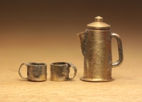 | This is the final version for now. The pot has a slightly smaller and cleaner spout, measuring .1 x .04 inches. It is formed from a folded piece of .002 brass. The cup handles also have a little more material. I used .002 shim stock this time around, and also made them a little wider to increase visibility.
Next will be to get some color on them, and I am hoping the results are satisfactory. Given how tough they will be to see in the car though, any result that changes the color will be fine. Working at this size is a real challenge with the tools I have, but it has been enjoyable. I fully expect to do it again at some point, when I have another table to set. |
|
| . | |||
| 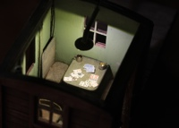 | 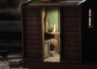 | Testing the previous coffee pot and cups for scale. I am quite pleased with the overall effect. The coffee cups look a lot better on the table, and at a distance! Yes, the stove is a bit crooked, but I don't mind it, as long as the coffee pot doesn't walk off and spill on the floor. | |
Unfortunately, this kit is no longer available. Boulder Valley Models closed not long after I bought mine.
Copyright 2016, Thayer Syme
All rights reserved